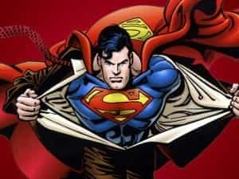
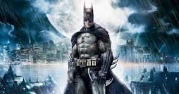

Davis was trained as a Historian at McMaster University, and as an Infantry soldier in the Canadian Forces. An author, strategist, Catholic medievalist, and an entrepreneur, his writing can be found at Stares at the World.


Batman Vs Superman: Dawn of Justice could have been the film that helped heal the political rift that’s tearing apart America.
It could have; but instead it flopped.
Political and racial tensions are getting close to the breaking point, the worst they’ve been in decades, if not since the Civil War. Internal strife dominates both political parties with voters turning to outsider candidates; the tension between the parties is growing hot, with Democrats promoting violence and even joking about murder, while Republicans quietly stockpile ammunition in their basements.
Barrack Obama’s seeds of racial discord have taken root, growing into Black Lives Matter protesters who burn down their own neighborhoods, and White Identitarian groups who are becoming increasingly vocal and mainstream. The gap between the rich and the poor further fuels this fire, as the most indebted generation in history comes to age in a slumping economy, while welfare queens and economy-destroying CEOs are given free handouts.
One could be forgiven for thinking that America were on the verge of tearing itself apart. I myself do not think this. There is greatness in this country yet—greatness in her people—but no matter what happens, a period of strife is upon us.
Batman Vs Superman could have eased this strife and returned some measure of dialogue between the left and the right, to a conversation that’s been poisoned by social justice warriors and race baiters; but it failed. It failed because the creators knew nothing about the main characters, and nothing about America.
“Who would win in a fight? Batman or Superman?” It’s a question that’s been joked about for decades. Batman and Superman are two of the most iconic pieces of Americana and yet they stand in stark contrast. Both are undeniably American, yet both are fundamentally dissimilar. They both work towards the common good, but in manners which are incompatible if not outright irreconcilable. Every schoolboy understands this intuitively which is why the question is asked. Though they might not be able to put it into words, they realize that Batman and Superman represent the two halves of the American psyche.

Superman represents the grand hope of the American Experiment, a striving towards ubermensch greatness, towards outer space and superhuman perfection. He is an immigrant who perfectly embodies the ideals of his adopted home, who serves as a guiding beacon towards some future, blessed year, to a city on the hill called Metropolis. His S exploding out of his chest like a ray of hope, as he shines the light of truth upon the world.
He comes from a humble farming background, he lives modestly, and yet it is not greed or envy that drives him to aim his X-Ray vision upon the corrupt power brokers of society; rather, it is their envy of a modest man which drives them into becoming his enemies. Lex Luthor: a self-made millionaire, a brilliant scientist, and an accomplished body builder who nevertheless resents the fact that he lives in the shadow of the Son of Krypton; a man who cannot appreciate what he has.
Superman is the idealized liberal; his enemy is the degenerate conservative.

Batman shares none of his brother’s optimism. He represents the cold, brutal side of reality. Anger; vengeance; fear. He is a man who has seen evil firsthand, and who knows its full extent. Who has dived deep within himself and encountered his own internal demons, only to return victorious.
Fear is not his enemy; he has made it his ally.
Batman comes from old money, and he knows just how fragile civilization truly is. He understands the necessity of honoring one’s bloodline, of having a memory that stretches back generations, he embraces the noblesse oblige of defending the innocent while punishing the guilty without quarter.
His greatest enemy is the chaos that would tear civilization apart. His nemesis is the Joker: a rebel without a cause, a wild card, a man who just wants to see the world burn.
Batman is the idealized conservative; his enemy is the degenerate liberal.
These were the themes explored in Frank Miller’s 1986 series The Dark Knight Returns. It was set in a futuristic dystopia where Batman was an old man, Robin had been murdered, Superman had been reduced to an American PR agent, the streets were overwhelmed with chaotic thugs, and the news media had degenerated into little more than pornography. Batman and Superman came to blows precisely because American society had reached a tipping point, their battle was a metaphorical battle for the future of the Republic.
This is the sort of movie that we should have had; something that explored and elucidated the strife we see all around us every day, something that allowed for catharsis and even, maybe, a solution—or at least a light in the distance to guide us forward. Instead what we got was a fight, mano e mano, based upon a miscommunication. Batman suspects that Superman might be a threat—“If there’s even a 1% chance we can’t risk it.”—but eventually realizes that their mothers had the same first name, so they should team up and start a club house called The Justice League.
This theme was far better explored in Watchmen, with Doctor Manhattan as the terrifying Ubermensch, and it was given the appropriate setting: the Cold War. “Even a 1% chance of total destruction,” is the sort of concern that a man facing nuclear war worries about, but in our day we’re facing a society that’s tearing itself apart.
The present election is less about left versus right than it is voters versus their own parties. A recent joke circling amongst Washington insiders is “Lose With Cruz!” They’d rather see him lose to Hillary than they themselves lose their influence under Trump, and they’re doing everything within their power to ensure a Republican defeat. Among the Democrats the same game is being played against Bernie Sanders, their own outsider candidate.
Both the mainstream Democrats and the GOPe are pushing a globalist agenda; open borders, atomized individuals, the destruction of culture, enslavement and dependence to multinational corporations, a world full of individuals who cannot stand on their own and who cannot help one another. A feedlot of anomie.
Imagine a story which was written for this context, by somebody who understood the main characters: Batman warring against Superman because of the progressive creep and the economic destruction that the federal government was wreaking upon American manufacturing; Superman fighting against the reactionary who didn’t want to raise the minimum wage during America’s Great Recession; only for both men to realize it’s not the government, nor industry that’s the problem–it’s the Globalists behind the scenes.
The two of them nothing but useful idiots in a chess game played by psychopaths, until they saw the game for what it was and united to form a team to fight against it.
The problem with writing such a script, however, is that the left would have to admit that they’ve been played. Whatever justifications they once had for demanding environmental regulations against toxic chemicals, or equal treatment of all people before the law, no longer exist; these problems were dealt with long ago, and since then it’s been nothing but mission creep. Any honest man of the left, were he to take a good, hard look at the present day bureaucracy, would realize that it had become a tool of elites; were he a man of any political integrity he would immediately demand that welfare, regulation, and government spending be slashed to reasonable levels so that the parasites in Washington and Wall Street could be starved.
Men of such caliber are rare.
During last year’s GamerGate, the moderate left finally stood up to the radicals; the Social Justice Warriors who promote sexual perversity for the sake of destroying intimacy, twisting culture to pervert relations between the sexes. But they never truly identified what the enemy was, seeing the struggle as nothing more than a fight for ethics in gaming journalism. After making respectable headway, they immediately turned and started attacking their conservative brothers once more, allowing the infection time to regroup.
Somebody like Nolan might have been able to capture this message and broadcast it to the masses, but Zach Snyder simply wasn’t up to the task. He created an art-house action flick with a formulaic plotline, a film that was all climax and no allegory. It could have been great…
…but it wasn’t.
The man of the left remains asleep; pursuing failed Soviet policies through Sanders, burning his own neighborhoods and the constitution itself, while remaining unaware of what his party is plotting. Superman has been twisted by the power of pink Kryptonite, and until he shakes off its effects the Dark Knight will have to fight the Globalists on his own.
Read More: How To Become A Superhero